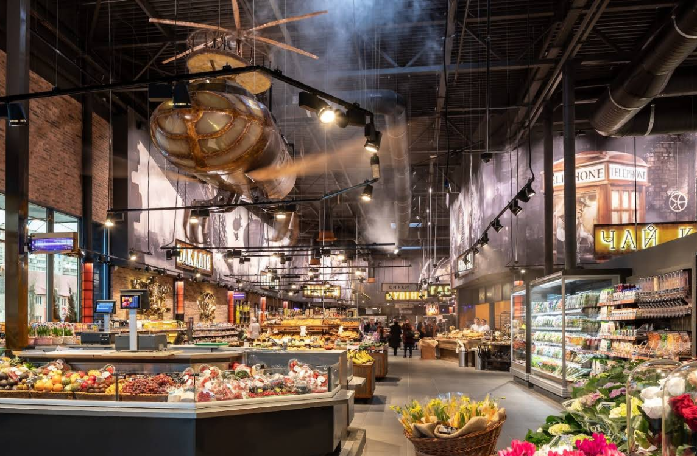

Visitez l'oblast de Kiev - Vychhorod
Visitez l'oblast de Kiev - VychhorodHéraldique

Drapeau

Conseil de la ville
Carte de la ville
la description de la ville
Vychhorod est une ville d'Ukraine, le centre administratif du district de Vychhorod, dans l'oblast de Kiev. Situé sur la rive droite du fleuve Dniepr. Banlieue nord de Kyiv.
La première mention de l'existence de Vyshgorod remonte à 946. Sous cette date dans la chronique « Le Conte des années passées », elle est mentionnée comme la ville de la princesse Olga.
Les endroits à visiter
- le bord du réservoir
- musée de la poterie
- magasin “Silpo” 
- “maison aux canneberges”


Gallerie